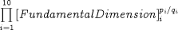
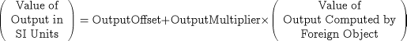

The first verification procedure, gFOCM, is used by gPROMS to ascertain the existence of a given method, to determine the number of inputs that the method expects, and to obtain detailed information on the method's output. It has the form:
gFOCM (ForeignObjectID, ForeignObjectHandle, MethodName, NoInputs, OutputLength, OutputType, OutputDimensionsNum, OutputDimensionsDenom, OutputOffset, OutputMultiplier, Status)
The arguments of gFOCM are described in detail in the table below:
| Name of Argument | Type | Description | Specified on Entry | Specified on Exit |
|---|---|---|---|---|
| ForeignObjectID | Character*256 | Full name of Foreign Object (terminated with a null). | YES | NO |
| ForeignObjectHandle | Integer | Handle for identifying Foreign Object. | YES | NO |
| MethodName | Character*256 | Name of method (terminated with a null). | YES | NO |
| NoInputs | Integer | Number of inputs for this method. | NO | YES |
| OutputLength | Integer | Length of method output. | NO | YES |
| OutputType | Integer | The type of the method output. This will be: 1 for REAL, 2 for INTEGER, 3 for LOGICAL and 4 for STRING. | NO | YES |
| OutputDimensionsNum | Integer | The numerator of the fundamental dimensions of the output of the method. An array of length 10. | NO | YES |
| OutputDimensionsDenom | Integer | The denominator of the fundamental dimensions of the output of the method. An array of length 10. | NO | YES |
| OutputOffset | Double Precision | Offset constant for conversion of units of measurement of method output to SI units. A scalar quantity. | NO | YES |
| OutputMultiplier | Double Precision | Multiplier constant for conversion of units of measurement of method output to SI units. A scalar quantity. | NO | YES |
| Status | Integer | Status of this service request. Status = 1 implies successful completion of this service. All other values signify failure. | NO | YES |
The first two, ForeignObjectID and ForeignObjectHandle, are used by gPROMS to identify the Foreign Object instance to which the request relates (see section on Foreign Object initialisation procedure). The third argument, MethodName1The MethodName is always provided by gPROMS in capitals in all calls to Foreign Object services.identifies the method. gFOCM should then return the number of inputs that this method expects as well as detailed information on the method's (unique) output. By setting Status to a value of 1, gFOCM signals that, indeed, such a method is supported by the Foreign Object.
The specification of the physical dimensions of the method output is done in terms of the integers pi and qi that define a quantity's dimensions as:

where the 10 fundamental dimensions, i = 1,..,10, are listed in the table below:
| Fundamental Dimension | Description | SI Units |
|---|---|---|
| 1 | Length | metre |
| 2 | Mass | kilogram |
| 3 | Time | second |
| 4 | Electric Current | Ampere |
| 5 | Temperature | Kelvin |
| 6 | Amount of Substance | mole |
| 7 | Luminous Intensity | candela |
| 8 | Plane Angle | radian |
| 9 | Solid Angle | steradian |
| 10 | Money | US dollar |
In the argument list of gFOCM, pi corresponds to OutputDimensionsNum and qi to OutputDimensionsDenom. Although, in most cases, the index pi/qi will take integer values (ie qi will be 1 for all i), using both pi and qi allows rational indices also to be specified whenever necessary. For example, if the method output is a velocity, the dimensions returned should be:
OutputDimensionsNum = [ 1, 0, -1, 0, 0, 0, 0, 0, 0, 0 ]
and:
OutputDimensionsDenom = [ 1, 1, 1, 1, 1, 1, 1, 1, 1, 1 ]
The Foreign Object also has to specify the units of measurement of the output by setting the arguments OutputOffset and OutputMultiplier. These are such that:

For instance, for a velocity measured in km/hr, the OutputOffset should be 0 while the OutputMultiplier should have a value of 1000/3600 . On the other hand, for a temperature measured in degrees Fahrenheit, the corresponding values should be 255.37 (= 273.15 - 5/9*32) and 5/9 respectively.